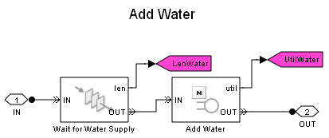

Batch Production Process
Contents
Overview
This model simulates the use of shared resources in a batch production process to provide insights into inadequacies in resource capacities. Altering the resource profile in different ways and observing the changes in simulation results can help you eliminate such inadequacies and improve the performance of the production system. The explicit steps for improving the performance begin in Using the Model to Analyze Production Process.
Structure of Model
At the top level of the model, the Production Orders subsystem simulates the generation and backlog of production orders. The Batch Reactors subsystem models batch reactors, one of the main shared resources in the production process. The block labeled Obtain Reactor requests a batch reactor upon starting to process a production order. After the Execute Chemical Process Recipe subsystem completes the order according to a specified chemical process recipe, the block labeled Release Reactor releases the use of the batch reactor. The Data Analysis subsystem analyzes data related to completion of production orders.
The model uses a preloaded queue technique to model the group of batch reactors. To learn about this technique, see Preload Queue with Entities. To learn about the resource request and release technique in this model, see Resource Allocation from Multiple Pools.
Batch Production Process
The Execute Chemical Process Recipe subsystem simulates the chemical process to produce sol (a type of colloid). A six-step recipe models the main operations in sol production. Execution of these steps requires different resources. A batch reactor provides built-in capabilities to execute steps like adding color, adding particles and stir. Thus the resources required by these steps do not need to be modeled separately. The steps to add water, heat up and drain, on the other hand, require extra resources. These resources are shared by all the batch reactors and are limited by the capacity of the production system.
For example, when water usage reaches the full capacity, water pressure is too low for another batch reactor to access. In this case, the production process in that batch reactor pauses until the water supply becomes available. In the Execute Chemical Process Recipe subsystem, such a resource sharing process is modeled by a FIFO Queue block labeled Wait for Water Supply and an N-Server block labeled Add Water in the Add Water subsystem, with the Number of servers parameter of the N-Server block modeling the capacity of the water supply. During simulation, the number of entities in the FIFO Queue block indicates the number of batch reactors waiting for water, and the number of entities in the N-Server block represents the number of batch reactors accessing water.
The modeled batch production process is capable of producing two types of batches: type A and type B. Although the main steps required to produce either batch are the same, the chemical process recipes are different. For example, the recipe to produce type B batch requires more water, so the step to add water takes more time to complete.
Results and Displays
During simulation, the Data Analysis subsystem displays these scopes to demonstrate the performance of the production process:
- Average number of orders in backlog
- Average number of batches waiting for water
- Average number of batches waiting for heat
- Average number of batches waiting for draining
- Utilization of batch reactors
- Utilization of water supply
- Utilization of heat supply
- Utilization of draining facility
- Throughput of type A batch
- Throughput of type B batch
A Display block at the top level of the model also provides a numeric view of the utilization of all four types of shared resources.
Experimenting with the Model
(For use with live model only)
- To change the capacities of shared resources, double-click the configuration block in the colored region labeled Production System, and change the settings in the dialog.
- To change the properties of either type of batch, double-click the corresponding configuration block in the colored region labeled Order System. Here you can change the period at which orders are generated for that type of batch by changing the Order generation period parameter, or change the recipe to produce such type of batch by changing other parameters. These parameters indicates the processing time a batch requires in a specific chemical processing step.
Using the Model to Analyze Production Process
The model with the original configuration represents a production system equipped with inadequate resources. Such situation is common to manufacturing industry, where upgrade of existing production systems is a necessity with the growth of production demand.
Simulation can help you find a solution to eliminate such inadequacies and improve the performance of the production system. The process of searching for solutions is the process of evaluating the existing production process and exploring alternative resource profiles. Simulation helps this process by effectively replicating what is happening or is going to happen in the real world.
The following steps introduce how a performance improvement solution is developed for the modeled batch production process.
Step 1: Run the simulation using the original resource profile. The scope labeled Average Volume of Order Backlog shows that orders accumulate. In addition, the scope labeled Utilization of Batch Reactors shows that the batch reactors operate at full capacity. Both quantities indicate that the system needs more batch reactors to enhance its production capability.
Step 2: Following the analysis in the previous step, the second simulation increases the number of batch reactors to 20. You may expect a drop in the volume of order backlog and the utilization of the batch reactors. However, the figures below illustrate that neither becomes true. The order backlog stays at a high volume and even with 10 more batch reactors, the utilization is still at a peak.
Inspecting the scope labeled Average Number of Batches Waiting and the scope labeled Utilization of Draining Facility indicates that over half the batch reactors wait for draining even though the draining facility operates at full capacity. This performance bottleneck can be alleviated by increasing the capacity of the draining facility.
Step 3: Increase the capacity of the draining facility to 2, and run the simulation again. From the figures below, you can observe that the average number of batches waiting for draining is tremendously reduced. This indicates that the draining facility is adequate.
However, the order backlog still has a high volume. Further inspection of simulation results exposes another bottleneck of the production process -- the heat supply. On average, almost 10 batches are waiting for the use of the heat supply. This indicates that the capacity of the heat supply needs to be increased.
Step 4: Increase capacity of the heat supply by 1 and rerun the simulation. This time, scopes show a performance that indicates a system with sufficient capacity -- order backlog is almost zero and the number of waiting batches between production steps is low.
Inspecting utilizations of shared resources indicates that the water supply, the heat supply and the draining facility almost operate at full capacity. However, batch reactors only have a utilization of 60%. This suggests that the production system may have more batch reactors than needed.
Step 5: Reduce the number of batch reactors to 13. This time the utilization of batch reactors are increased, with the system providing sufficient capacity to fully satisfy the production demand.
The figures below illustrate the performance of the production system at the end of step 5.
The above steps suggest a solution to improve the production system. Adding 3 more batch reactors, 1 more heating unit and 1 more draining unit will enable the system to fully satisfy the given production demand when the system operates at full capacity. The production system should further increase resource capacities considering future growth of the demand and the needs for system maintenance.